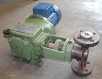
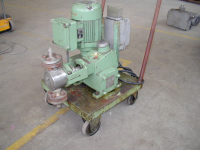
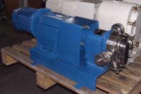
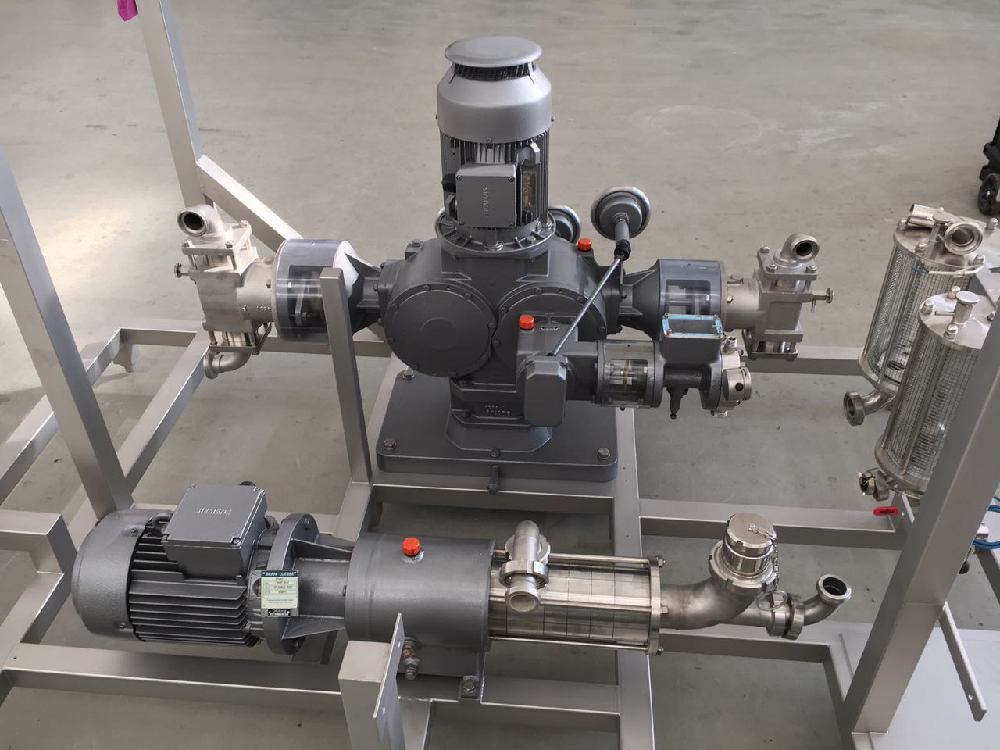
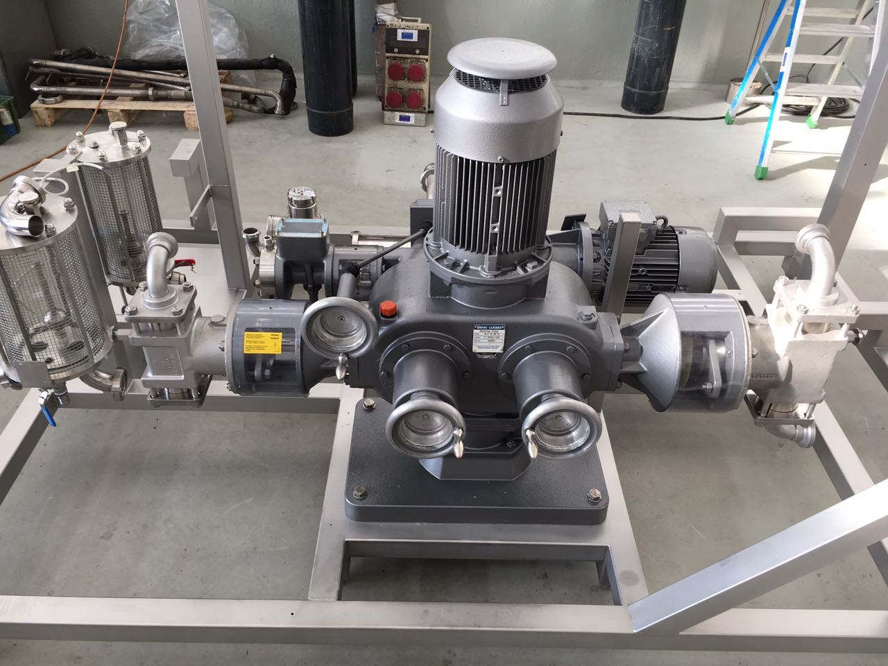
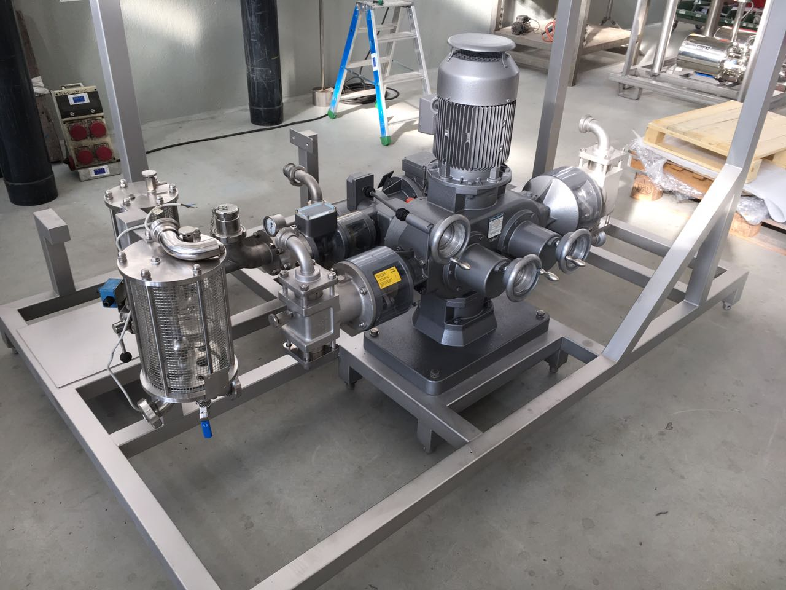

Faulty components and/or to reviews
In the following two pictures, examples of mechanical components disassembled from a plant under review. In addition to normal replacement of wear parts (such as gaskets, sealing rings and like), a more accurate verification is often required, including:
- disassembling the component in all its parts
- Cleaning and eventual grinding of all the mechanical parts
- Preventive replacement of all parts subject to pressure, vibration, torsion
- Complete inspection of the electrical system
- Mounting and testing


Revised components
A plant component revised at the counter and ready to be installed.

Revision and recovery of disused plants
Some examples of disused devices, brought to full and complete operational efficiency


